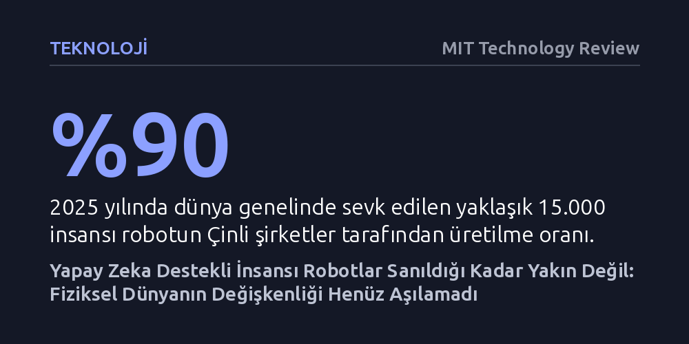

TEKNOLOJI · MIT Technology Review · 2026-10-09
Büyük dil modellerinin başarısı insansı robotlar için erken bir iyimserlik yaratsa da mevcut yapay zeka mimarileri fiziksel dünyanın değişkenliğini yönetmekte yetersiz kalıyor. Robotların laboratuvar gösterilerinden çıkıp günlük hayatta güvenilir iş gücüne dönüşmesi beklenenden çok daha uzun sürecek.
İnsansı robot videolarının yarattığı yapay zeka heyecanının ardındaki temel veri ve fizik kısıtlarını göstererek, teknolojinin gerçek olgunlaşma takvimine dair gerçekçi bir bakış açısı sunuyor.

Son dönemde sosyal medya akışlarını izleyen biri, insansı robotların artık gündelik işleri zahmetsizce yapabilecek olgunluğa eriştiğini düşünebilir. Bardak taşıyan, mikrodalga fırının kapağını açan, hatta sahnede senkronize dans eden mekanik gövdeler art arda sergileniyor. Elon Musk, Optimus modelinin fabrikaları ve ev işlerini kökten değiştireceğini savunurken, Silikon Vadisi yatırımcıları robotik alanının gezegen tarihinin en büyük sektörüne dönüşeceğini iddia ediyor.
Ne var ki bu büyüleyici videoların arka planındaki gerçek çok daha kırılgan. Kameraların kayıtta olmadığı anlarda sendelemeler, boşluğa takılıp düşmeler ve bir gömleği dahi düzgünce kavrayamayan kollar göze çarpıyor. Daha da önemlisi, tanıtımlarda öne çıkan becerilerin önemli bir bölümü otonom olmaktan uzak; sahne gerisindeki operatörlerin uzaktan kontrolüne dayanıyor. Şirketlerin kamuoyuna sunduğu iddialı takvimler ile laboratuvar ortamındaki fiili kabiliyetler arasında ciddi bir uçurum bulunuyor.
Geçmişte endüstriyel robotlar, her bir milimetresi mühendisler tarafından binlerce satır kodla önceden tanımlanmış katı kurallarla çalışıyordu. Son yıllarda ise dil modellerindeki sıçrama, robot kontrol yazılımlarının da yapay zekaya devredilmesinin önünü açtı. Önce metin ve görüntüyü birlikte işleyen modeller devreye girdi; bu sayede robot yere dökülen sıvıyı fark ettiğinde temizlik için doğru nesneyi seçebilecek bağlamsal kavrayışa ulaştı.
Ardından bu yapıya motor hareket komutlarını ekleyen görsel-dil-eylem modelleri geliştirildi. Google DeepMind’ın test platformlarında olduğu gibi, bu sistemler insanların uzaktan kumandayla gerçekleştirdiği binlerce saatlik yönlendirme verisini inceleyerek bir beslenme çantası hazırlamayı veya maşayla nesne tutmayı öğrenebiliyor. Ancak burada kritik bir engel var: Robot, eğitim verisinde doğrudan yer almayan en ufak bir sapmayla karşılaştığında süreci başarıyla tamamlama ihtimali hızla sıfıra yaklaşıyor.
Büyük dil modelleri internetteki sınırsız metin deryasından beslenerek gelişti. Oysa fiziksel dünyada bir robot kolunu ustalıkla hareket ettirmeyi öğretecek hazır ve nitelikli bir veri kütüphanesi yok. İnsanların saatlerce robotları uzaktan yönlendirerek veri üretmesi son derece pahalı ve yavaş işliyor; internetteki sıradan insan videoları ise robotik hassasiyet için gereken temas ve kuvvet dinamiklerini içermiyor. Üstelik sıradan bir kahve yapma eyleminde bile sayısız fincan şekli, makine türü ve sıvı akışkanlığı gibi sonsuz değişken söz konusu.
Araştırmacılar bu veri darboğazını aşmak için robotlara doğrudan fizik kurallarını öğreten dünya modellerine odaklanıyor. Amaç, robotu her senaryoyu sahada deneme yanılmaya mecbur bırakmak yerine; yerçekimi, çarpışma ve sürtünme gibi kuralları zihninde canlandırabilen simülasyon temelli bir iç gerçeklik kurmak. Bu alandaki girişimler milyarlarca dolarlık yatırımlar çekse de fiziksel dünyayı öngörebilen modeller henüz erken araştırma evresinde bulunuyor.
Physical Intelligence gibi öncü girişimler, hafifletilmiş dünya modellerinin robota bir sonraki eylemi görsel kareler halinde fısıldayarak yeni görevleri çözdürebildiğini gösteriyor. Örneğin daha önce hiç karşılaşmadığı halde bir hava fritözüne patates yerleştirmeyi deneyen bir robot, temel beceri parçalarını harmanlayarak göreve yaklaşabiliyor. Fakat mikrodalgaya tabak koymak gibi tekil bir adımı atmak ile "akşam yemeği hazırla" komutunu alıp buzdolabını taramak, sebze doğramak ve ocağı yönetmek arasında devasa bir bilişsel uçurum var. DeepMind'ın mutfaktan risotto malzemelerini sepete toplama denemeleri bile henüz hüsranla sonuçlanıyor.
Yapay zekanın duayen isimlerinden Yann LeCun'un Davos'ta vurguladığı gibi, "Bu şirketlerin kesinlikle hiçbiri, o robotları işe yarar kılacak kadar akıllı hale getirmeyi henüz bilmiyor." Batı'da yazılım sınırları tartışılırken Çinli üreticiler ucuz donanımlarla küresel sevkiyatın ezici çoğunluğunu ele geçirmiş durumda. Ancak ucuzlayan gövdeler dahi zihinsel genelleme sorununu çözmüyor. Leonardo da Vinci'den Honda'nın ASIMO'suna uzanan asırlık insansı makine hayali, yapay zekanın tüm ilerlemesine rağmen fiziksel dünyanın karmaşıklığı karşısında zamana ihtiyaç duymaya devam ediyor.